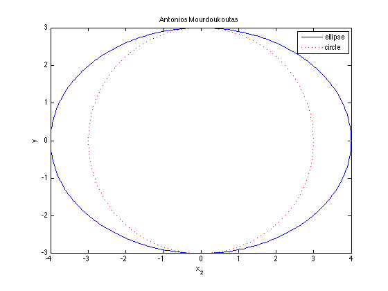

% MAT Lab 2 % Antonios Mourdoukoutas syms t x=4*cos(t) y=3*sin(t) ezplot(x,y, [0,2*pi]) hold on syms x1 syms x2 y1=sqrt(9-x1.^2.) y2=-sqrt(9-x2.^2.) set(ezplot(y1,[-3,3]),'Color','red','Linestyle',':') hold on set(ezplot(y2,[-3,3]),'Color','red','Linestyle',':') axis equal axis([-4, 4, -3, 3]) title('Antonios Mourdoukoutas') legend('ellipse','circle')
x = 4*cos(t) y = 3*sin(t) y1 = (9 - x1^2)^(1/2) y2 = -(9 - x2^2)^(1/2)